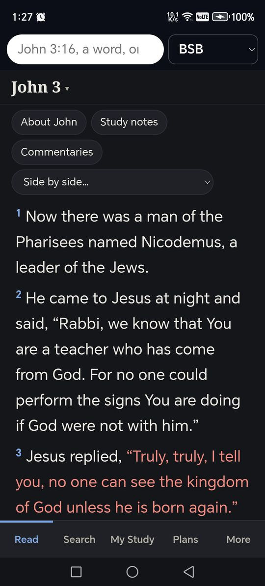
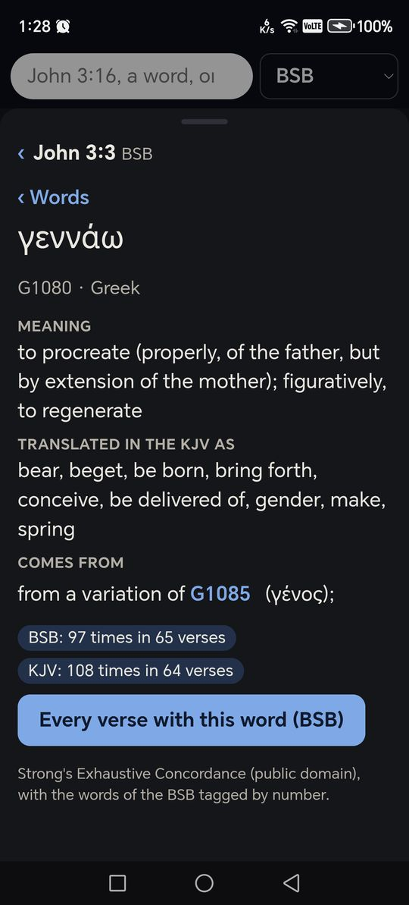
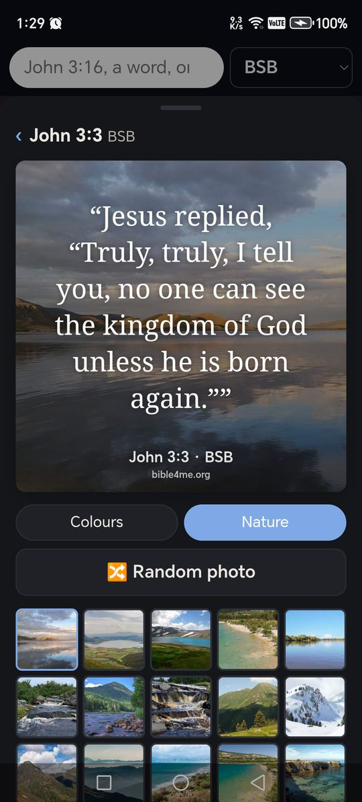
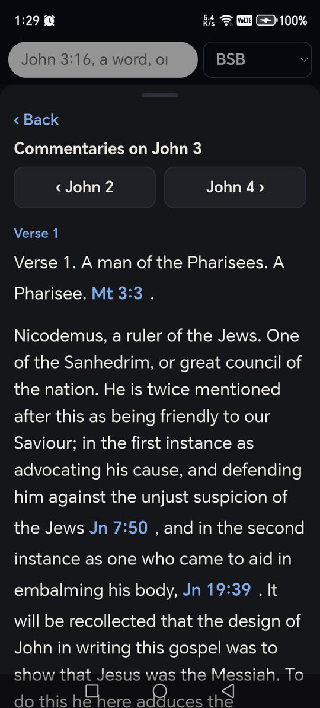
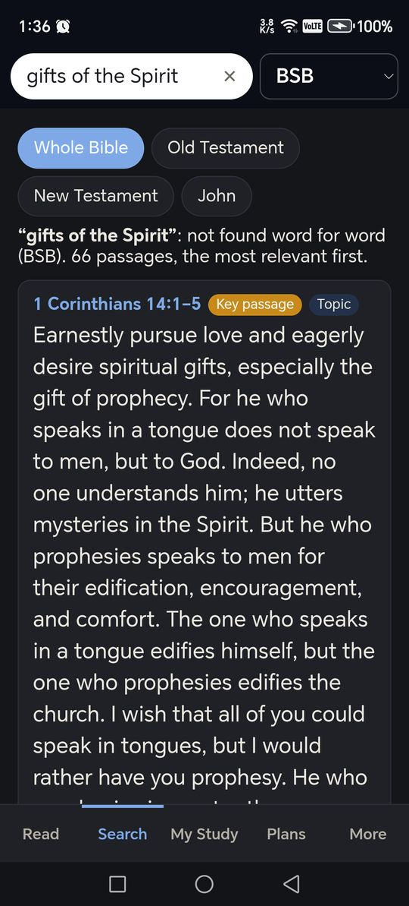
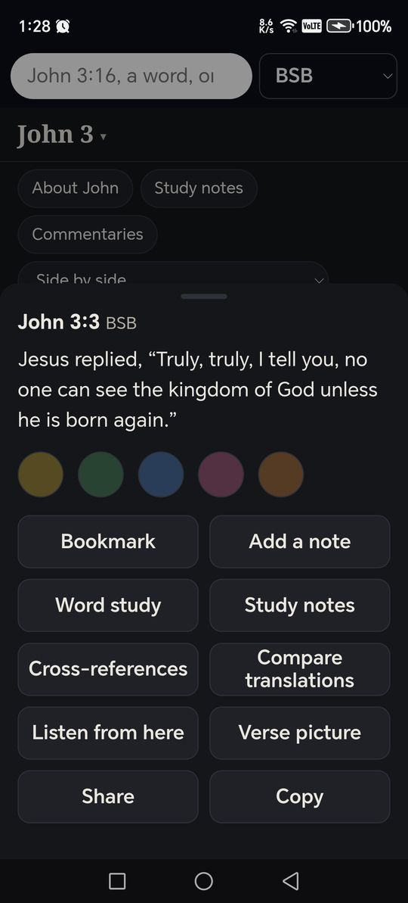

Bible Concordance for Android
The Bible in your pocket: small, fast and fully offline.
Download for Android
Version 2.9.3 (Beta) · Android 7 or newer · phones only, not on the Play Store
A companion to the Windows app, for reading, finding a passage quickly, searching by word or subject, studying a verse, and keeping your own bookmarks, highlights and notes. It is a smaller version on purpose, so that it stays quick and fits on a phone.
Beta: the phone app is new and still being tested. It works, but you may meet rough edges.
How to install it
- Tap Download for Android above, on the phone. If the browser warns that the file might be harmful, choose Download anyway; it says this about every app that does not come from the Play Store.
- When the download finishes, tap Open, or find BibleConcordance_Android_2.9.3.apk in the phone's Files app under Downloads and tap it.
- The first time, Android says that the browser (or the Files app) is not allowed to install apps. Tap Settings, switch on Allow from this source, and go back.
- Tap Install. If Google Play Protect says it does not recognise the developer, choose Install anyway (sometimes under "More details"). The app is not listed on the Play Store, so Google has no record of it.
- Tap Open. The first start takes a few seconds while the Bible is unpacked; after that it opens at once, where you left off.
Updating, and moving your notes
- Installing this version over an older one keeps everything: your bookmarks, highlights, notes and reading plans.
- From version 0.3.2 the app tells you when a new version is out. It looks once a day when you open it. Tap Install and it downloads the update and hands it to Android, which asks you to confirm.
- The first time, Android asks you to allow Bible Concordance to install apps. Switch on Allow from this source, go back, and tap Install again.
- You can turn the daily check off, or check by hand, under More → Updates. Nothing about you or your phone is sent.
- If you have version 0.3.0 or older, download and install the newest version from this page once; after that, updates come to you.
- Save a backup first (in the app: More → Save a backup) if your notes matter to you. Uninstalling the app deletes them.
- Keep in step with your computer: at home on your Wi-Fi, More → Keep in step → Find my computer, and type the code the Windows app shows (Settings → Keep in step → Pair a phone). Your bookmarks, highlights, notes and reading plans then stay the same on both.
- The same backup file can be restored in the Windows app (My Study → Import backup), and a backup made there can be restored on the phone (More → Restore a backup).
Checking the file
The app's full source is public on
GitHub.
The file's SHA-256 is 9249d5eba0b62ba2fe37601a86ef02d10cb4d814086e740ce95261b303763780.
Screenshots






What's inside
One search box
Type a reference such as "John 3:16" or "1 cor 13" to go straight there. Type a word, a phrase or a subject, such as "gifts of the Spirit", to search the whole Bible, one testament or one book. Search the way you remember it: "Daniel's prayer delayed by 21 days" finds Daniel 10, "the prodigal son" finds Luke 15, and misspelt names are put right. The free Advanced search upgrade (a one-time 31 MB download, then offline) finds verses by what you mean, not only by your words. Ask a question, such as "how many days was Jesus on earth after His resurrection?", and the answer comes first, with its verses.
Five translations built in
BSB, KJV, ASV, WEB and YLT, with the words of Jesus in red. Swipe sideways to turn the chapter.
1,200+ more Bibles
Download any of the free translations from eBible.org, in hundreds of languages, or add a Bible you have as an e-Sword, MySword or SWORD file, and read them, compare them or set them side by side. Searching uses the built-in BSB.
Side by side
Show a second translation under each verse as you read.
Tap a verse
Bookmark it, highlight it in eleven colours (named as you like, the same as on your computer), write a note on it, see its cross-references, compare it across the translations, share it or copy it.
Word study
In the BSB and KJV, tap a word for its Hebrew or Greek root from Strong's, its meaning, how often it is used, and every verse that uses it.
Study notes
Tyndale Open Study Notes on each verse and chapter, and an introduction to every book of the Bible.
A library on your phone
Download free commentaries, dictionaries, books and devotionals from CrossWire (Barnes, Matthew Henry, Easton's, Spurgeon and many more), or add e-Sword and MySword modules you have. Read the commentaries on the chapter you are on, look up a word or a Strong's number, and open a devotional on today's date.
In step with your computer
At home on your Wi-Fi, the phone and the Windows app keep your bookmarks, highlights, notes and reading plans the same. No cloud and no account: they talk straight to each other.
Verse pictures
Turn a verse into a picture on a colour or one of 100 nature photos, then save it or share it to WhatsApp or anywhere else. The photos are a one-time 8 MB download.
Read aloud
From any verse, carrying on into the next chapter. Choose among the phone's voices, pick the speed, and set a sleep timer.
Reading plans and a daily reminder
Four reading plans, a reminder at the time you choose, and a reading streak that counts your days in a row and the chapters you have read.
Bible dictionary and topics
Easton's and Smith's dictionaries, with every Scripture reference a link, and topics from Nave's and Torrey's topical Bibles.
My Study, with tags
All your bookmarks, highlights and notes in one place. Give bookmarks and notes your own tags and filter by them.
Backup
Save your bookmarks, highlights, notes and reading plans to a file, and restore it on the phone or in the Windows app.
Make it yours
Light, sepia or dark; four text colours, high contrast, two fonts and the text size you like. A verse for the day when you open the app.
Tells you about updates
Once a day the app looks for a newer version and offers it. Installing is always your choice, and it can be switched off.
Offline and private
No account and no adverts. Everything built in works without the internet; only the optional downloads (more Bibles, the library, the nature photos, a new version of the app) need it.
What it leaves out
The seven built-in commentaries, the Hebrew and Greek texts, the map, the people and places index, the cross-reference graph, the sermon builder, printing, and the Bible pictures are in the Windows app only. They are what make that download large. (The phone's library can download many of the same commentaries.)
It is for Android phones. There is no iPhone version.